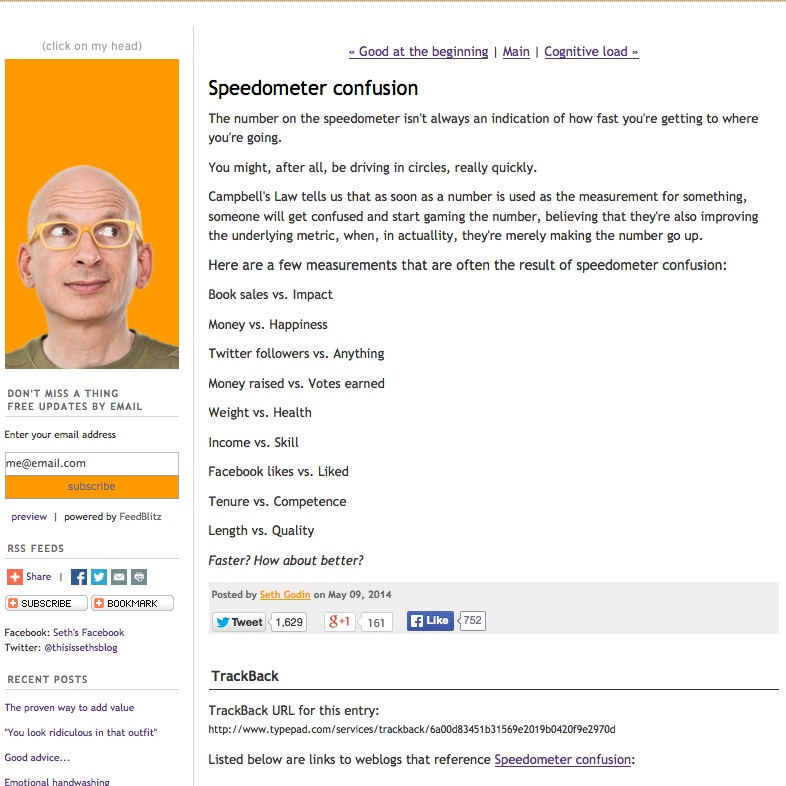
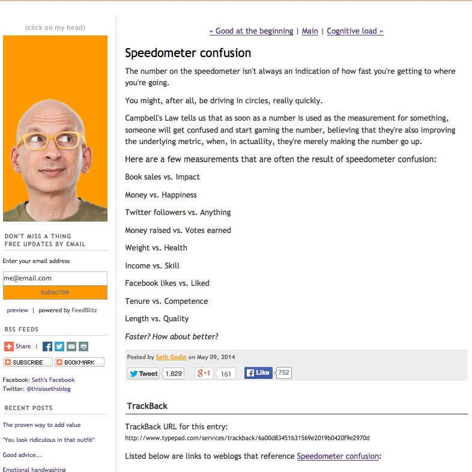

Speedometer Confusion

How simple.
The number on the speedometer isn't always an indication of how fast you're getting to where you're going.
So often we forget that. Focus.
Previously: Actually Reading Next: The Roast in the Fridge
How simple.
The number on the speedometer isn't always an indication of how fast you're getting to where you're going.
So often we forget that. Focus.
Previously: Actually Reading Next: The Roast in the Fridge